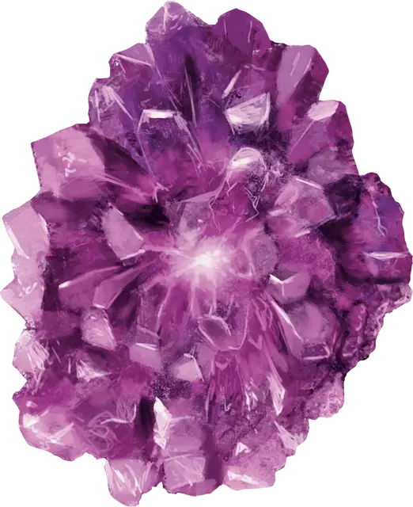

Пси-кристалл
Psi Crystal
Чудесный предмет, необычный (требуется настройка существом со значением Интеллекта 3 и выше)

Рекомендованная стоимость 101-500 зм
Этот кристалл наделяет вас телепатией до тех пор, пока вы остаетесь настроенными на него. Кристалл также светится изнутри пурпурным светом, пока вы настроены на него. Чем выше ваш Интеллект, тем сильнее интенсивность света и тем шире диапазон телепатии (см. таблицу Свойств пси-кристалла).
Свойства пси-кристалла
| Значение Интеллекта | Дальность телепатии | Интенсивность света |
| 3-7 | 15 футов | Испускает тусклый свет выходит в радиусе 5 футов |
| 8-11 | 30 футов | Испускает яркий свет в радиусе 5 футов и тусклый свет ещё на 5 футов |
| 12-15 | 60 футов | Испускает яркий свет в радиусе 10 футов и тусклый свет ещё на 10 футов |
| 16 или выше | 120 футов | Испускает яркий свет в радиусе 15 футов и тусклый свет ещё на 15 футов |
Телепатия
Телепатия — это магическая способность, которая позволяет существу мысленно общаться с другим существом в пределах указанного радиуса. Существо, с которым связываются, не обязательно должно иметь общий язык с телепатом, но оно должно понимать, как минимум, один язык. Существо без телепатии может получать и отвечать на телепатические сообщения, но не может начинать или прекращать телепатический разговор.
Существу с телепатией нет необходимости видеть существо, с которым оно связывается, и оно может закончить телепатический контакт в любое время. Контакт нарушается, как только кто-либо из существ выходит за пределы радиуса связи, или если существо с телепатией вступает в телепатический контакт с другим существом в радиусе. Существо с телепатией может начинать и обрывать телепатическую беседу без использования Действия, но если существо недееспособно, оно не может начинать контакт, а любая установленная телепатическая связь обрывается.
Существо в области заклинания преграда магии [antimagic field] или в любой области, где магия не работает, не может отправлять и получать телепатические сообщения.